Assignment 3: Spectacular Spectrograms (50 Points)
Chris Tralie
Click here to view musical statements
- Overview/Logistics
- Programming Tasks
Overview / Logistics
Can't sing? No problem. In this assignment, you will implement several algorithms to create "singing instruments," which is an application of something known as a vocoder. Students will also implement a procedure known as "phase retrieval" to estimate phase from amplitude-only information. Both of these tasks will be a great opportunity to practice Short-Time Fourier Transform concepts in the service of a slew of fun applications. More background information and directions will be interspersed in the programming task descriptions.
Learning Objectives
- Practice numpy arrays, methods, and for loops in the service of musical applications
- Extract and manipulate amplitude and phase from Short-Time Fourier Transform coefficients
- Line up audio samples in arrays properly using slices
- Convert seamlessly between time and frequency representations of audio
What To Submit
This assignment is split into two different deadlines. For each deadline, submit your python file vocoder.py to canvas. The deadlines are as follows:
- Submission 1: Comb Filter Vocoder, Inverse STFT, STFT-Based Vocoder
- Submission 2: The Griffin-Lim Algorithm, Sound Images, Beepy Tunes, Musical Statement
For the second submission, also submit an audio file for your musical statement and all of the txt files, audio files, and code that is needed to run your code used to create that statement. Finally, please submit answers to the following questions on Canvas
- A title for your musical statement
- If you want to submit your musical statement to the music contest, and if so, what name or pseudonym you would like to use in the musical gallery on our class web site
Programming Tasks
Click here to download the starter code for this assignment. In all of the tasks below, you will be editing methods in the vocoder.py file. You should also copy your instruments.py file from homework 2 into this directory, as it will be used to generate instruments in part 2 that will be shaped by voice.
Tip: As a general tip for all of the tasks, you can save yourself a lot of code by using element-wise operations in python. For instance, if S is an M x N matrix holding the complex STFT of some signal, you can compute the amplitude of every single sinusoid in every single window simply by saying
Similarly, you can compute all of the phases by saying
Don't forget about your element-wise multiplication operations either!
Below are the imports you will need in jupyter
Part 1: Comb Filter Vocoder (10 Points)
We saw in a class exercise that it is possible to make a pitched "robot sound" by applying convolution to a sound with a comb filter. In order to control the pitch, we noted that the spacing between impulses on the comb needs to be equal to the period, in samples, of the base frequency of the note we seek. You will use this observation to make an entire tune of such notes by applying different comb filters to different slices of audio, with one slice for each note.
Your Task
Fill in the method comb_tune. For each note, you should create a comb filter with num_pulses "teeth" with a spacing appropriate for that note. You should then convole that comb with the chunk of audio, referred to as xi in the code, using fftconvolve.
One thing to watch out for is if you perform convolution between two arrays of length M and N, the result will actually be of length M + N-1, because the echoes need some time to die out (you can verify the length of the convolution using len()). So you will have to add the audio samples into the output y, and you will also have to be careful not to go out of bounds on the last window. The picture below shows this overlap.
Here are a few examples of results you should get if this is working properly
Happy Birthday Dear Christopher
Voice
Result
Daft Punk Tribute
Voice
Result
Part 2: STFT-Based Vocoder
Inverse STFT (8 Points)
It is possible to invert the STFT by following what's known as a "shift-overlapp-add" (SOLA) procedure. In particular, we loop through each window in the STFT, take its inverse DFT, shift the samples to the appropriate position, and add them to the values that are already there. For example, if we have a window length of 1024 samples and a hop length of 512 samples,
- The first inverted window should be added to the output at slice 0:1024
- The second inverted window should be added from 512:1024+512
- The third inverted window should be added from 512*2:1024+512*2
- ... etc
We do have to be mindful of the fact that we multiplied the audio by a window before we took the STFT. However, in the case of a Hann window, everything works out nicely when the ratio between the window length and the hop length is a power of 2, and the overlapping regions sum to a constant number. In particular, if the ratio is Q = w/h, then the windows will sum to a constant Q/2. For instance, when the window length is 1024 samples and the hop length is 512 samples, the windows add together as follows (where each individual window is depicted with a different color, and you notice that the windows add together where they overlap):
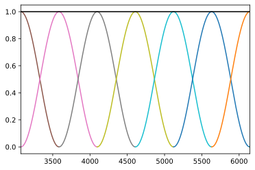When the window length is 1024 samples and the hop length is 256 samples, the windows add together as follows
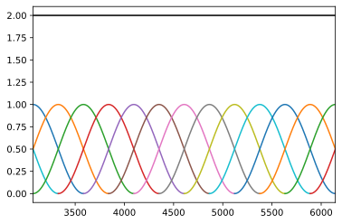Therefore, you can simply divide the shifted and overlapped inverse STFT by Q/2 to recover the original audio.
Your Task
Fill in the method istft to return audio samples corresponding to a complex STFT. To invert the fourier transform in each window, you can use np.real(np.fft.ifft()). (The np.real is there because due to rounding error, it's possible to have very small imaginary components upon inversion that mean nothing). To test this, perform and STFT and see if you can recover the original audio by performing your inverse STFT. For example, the run the following code
Which should produce the following audio if everything is working properly:
STFT-Based Vocoder (7 Points)
Once you have the inverse STFT working, there's actually a very simple procedure we can use to make a vocoder shaped around any instrument sound. Let's say we have instrument audio I and voice audio V. We're going to use the voice audio to shape the instrument audio by mixing together their STFTs. In particular, simply multiply each element in STFT(I) by the corresponding amplitude in STFT(V), and then take the inverse STFT.
We do have to be careful if we use the synthetic instruments from assignment 2 for the instrument sound, as the base frequency and its integer harmonics don't occur densely enough to support the spectrum of the voice in a way that is intelligible. To mitigate this, we have to apply some nonlinear distortion to the instrument sound to expand its frequency content so that it has enough to support the voice. As with the electric guitar, we can do this by passing our instrument audio samples through np.sign, which is akin to turning an electronic amplifier way up (this is the way we get that gritty, harmonically rich electric guitar sound in rock music).
Your Task
Fill in the method spectrogram_vocoder. Below is an example using the voice to shape an FM brass sound with this method
Tune
Voice
Result
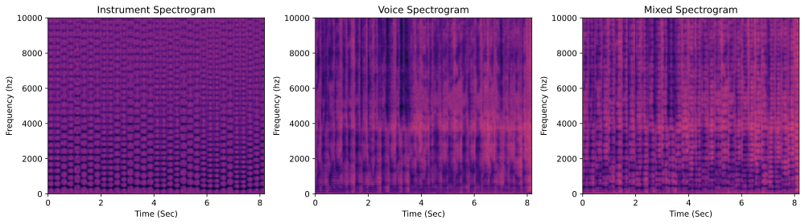
Below is an example using the voice to shape an FM bell sound
Tune
Voice
Result
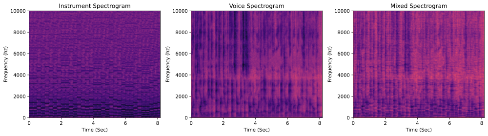
Part 3: Phase Retrieval
In this section, you will use a fundamental algorithm for phase retrieval, which is the process of estimating the phase from a magnitude only STFT. This is useful not only in applications when we're only given the amplitudes of our sinusoids, but also in applications where we want to warp sound in a way that would mess up the phase. For example, if we want to play audio at a faster rate without changing the pitch, the phases need to be adjusted. Conversely, if we want to move things up in frequency without changing the speed of the audio, we also have to adjust the phase. A quick and dirty way of doing both of these is to simply throw away the phase, warp the magnitude only STFT images, and then recover phase in the new images.
The Griffin-Lim Algorithm (8 Points)
The earliest algorithm for phase retrieval was devised by Daniel Griffin and Jae Lim in 1984, in the following paper. The idea is to perform an iterative procedure where the amplitudes are fixed but where the phases are slowly adjusted. Let's say we start with a magnitude-only spectrogram SAbs. Then the iterations of Griffin-Lim are as follows:
- Let S = SAbs
- Let A = stft(istft(S))
- Compute the phase of everything in A
- Let S have the amplitudes of SAbs but the phases of A. As a hint for this, if you have a matrix P with all of the phases of A expressed in radians, you can turn this into a matrix of complex exponentials eiP with
which applies eiP element-wise on every element in P. Now, the phases are expressed as complex numbers which can simply be multiplied by the amplitudes in SAbs. In fact, if you saynp.exp(1j*P)
you will notice this gives you a matrix of all 1s. This is because the magnitude of any complex number ei θ is 1. In other words, these numbers do not change the amplitude, only the phase. This is exactly what we want.np.abs(np.exp(1j*P)) - Repeat steps 2-4 for some specified number of iterations
- Perform one final istft on S, and return the resulting audio
Your Task
Fill in the griffin_lim method to implement this algorithm. A simple sanity check you can do to make sure it's working properly is to perform an STFT, throw out all of the phase information, and try to go back. For example, try the following code:
The result should sound like this if things are working properly
Original Audio
Phase Retrieval Result
This is definitely not perfect! Audio experts would say that this sounds a little bit "phase-y," meaning that the phases aren't totally correct (it almost has a metallic sound). However, it's quite a good estimate considering how we threw away all of the phase information and started from nothing.
For a slightly more interesting algorithm that runs with Griffin Lim as a subroutine, there is also code provided for you in time_shift that computes the magnitude spectrogram and stretches or compresses it along the time axis, followed by phase retrieval, to change the timing without changing the pitch. If your phase retrieval code works properly, here is what you should get when stretching out the time by 1.5x
Here is an example compressing the time to 3/5 of what it was
Phase Retrieval Application 1: Sound Images (7 Points)
One interesting "synesthetic" application that phase retrieval unlocks is that we can turn images into audio by taking any grayscale image and considering it a magnitude only specification of an STFT. If we apply phase retrieval, we can then fill in the phases for a sound whose absolute value STFT would match the specified image.
NOTE: John Muller (from spring 2021) pointed out that Aphex Twin has a song where they actually do this!
Your Task
Fill in the method im2sound to create a sound from an image. You will have to copy over the pixels of the image to a spectrogram, as well as their mirror image to ensure that the inverse DFT produces real numbers. See some of the examples below
Example 1: 1-Pixel Trajectory
Let's suppose we have the following image, in which a single pixel is lit up and moves around the frequency axis over time.

This is a slightly easier way to specify frequencies over time than what we did before with chirps, but we have to invert it back to the time domain to hear it. If we create the following complex magnitude spectrogram with a window length of 2048 that has zero phase everywhere
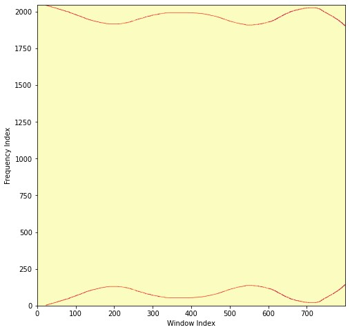And then invert it with phase retrieval, we get the following audio
Example 2: DOOM
Let's suppose we have the following image:

If we create the following complex magnitude spectrogram with a window length of 2048, being careful to mirror the frequencies appropriately:
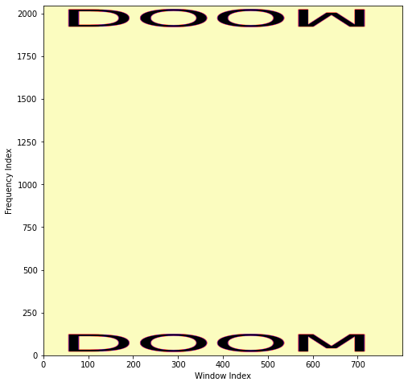And then invert it with phase retrieval, we get the following audio
Example 3: CS 372
Let's suppose we have the following image:

If we create the following complex magnitude spectrogram with a window length of 2048
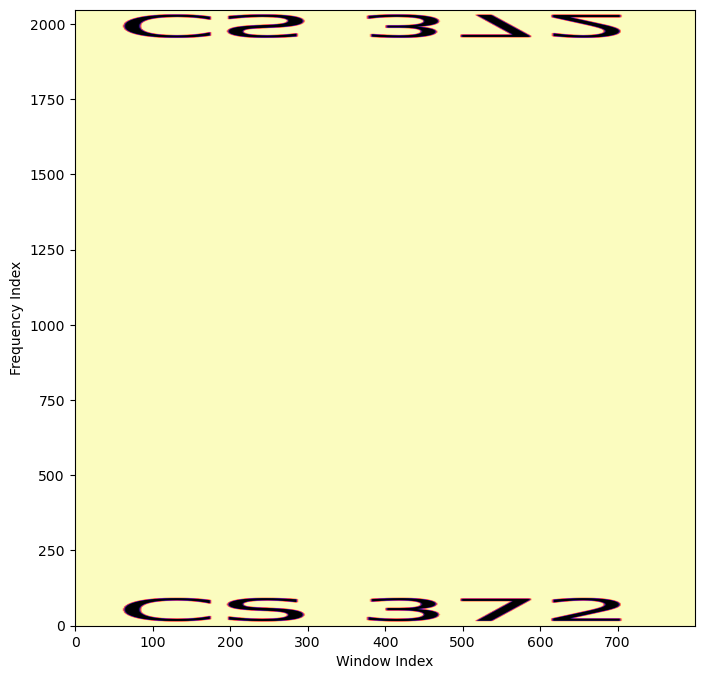And then invert it with phase retrieval, we get the following audio
Phase Retrieval Application 2: Beepy Tunes, Aka Tricking Shazam (7 Points)
The "Shazam technique" is an algorithm for recognizing a tune from a short clip of audio in a noisy environment, and it's led to the popular shazam app. The ingenious idea of this algorithms it retain only maxes in the spectrogram, and to throw everything else away. You can read more details about this algorithm in the original paper and in a writeup I made.
The first step that Shazam does is find every point in the spectrogram that is greater than all of its neighbors in a rectangle around it
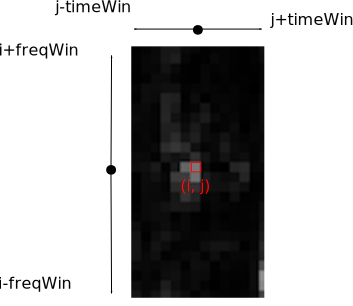Since we know this, we can make a spectrogram with only the maxes and trick the Shazam algorithm into thinking it's the original. For example, below is a spectrogram that we get by picking out all of time/frequency points in a 20 second clip from Rick Astley's famous tune within a 17 x 11 window whose max frequency bin is 256:
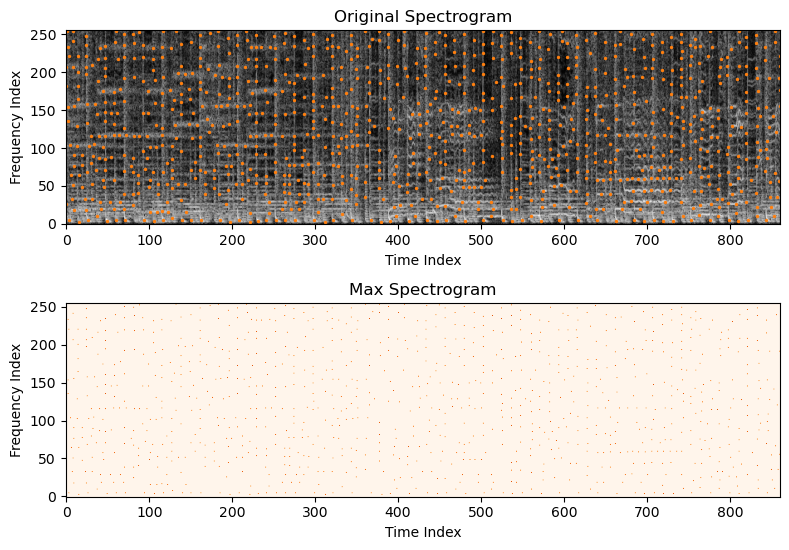If we invert the spectrogram using Griffin-Lim, we get the following "tune":
If you hold up your phone with Shazam, it will be tricked into thinking this is Rick Astley. So you can rick roll your phone!
As a side note, I made a web site to do this live at https://www.beepytunes.com
Your Task
Fill in the make_beepy_tune to create a beepy tune from a particular audio waveform. Below is the code you can use to replicate the Rick Roll example above:
Tips / Tricks
- As you did with sound images, you will have to mirror the frequencies
-
You can accomplish this task with a doubly-nested for loop, but have a look at the documentation for the
maximum_filtermethod in thescipy.ndimagelibrary. One call to this method with the appropriate parameters could save you that entire loop system!
Phase Retrieval Application 3: Pitch Shifting (Extra Credit +3)
For those who want a challenge, you can try to implement pitch shifting by nonlinearly warping the frequency axis, resampling, and performing phase retrieval (though this will be ungraded). Have a look a the time_shift method to see how to do the warp, and fill in the pitch_shift method. Here is an example shifting down in pitch by 4 halfsteps. Notice how the frequencies get compressed.
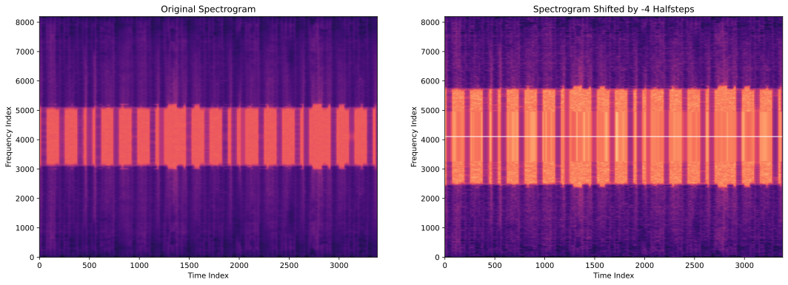
Here is an example shifting up in pitch by 4 halfsteps. Notice how the frequencies get stretched out.
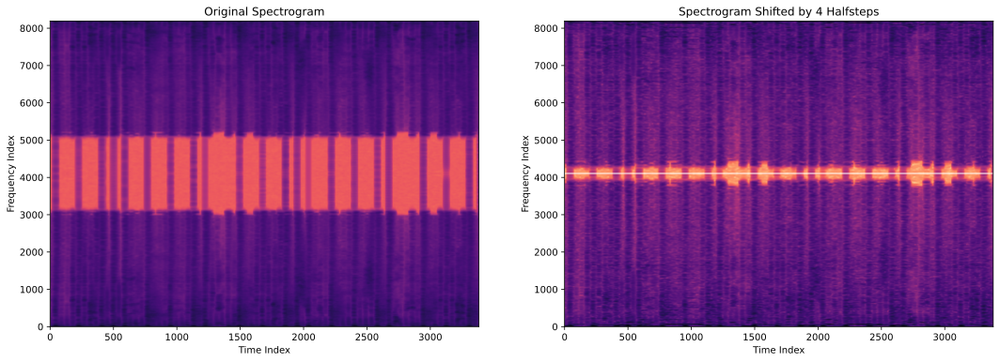
Musical Statement (3 Points)
You just made some really wacky compositional tools, so use them! As usual, a submission is required, but you may also choose to submit your entry to a contest, where the winner will earn 2 extra credit points.
If you're going to use the vocoders, you have to get the timing between the voice and the notes to line up very well. I'd recommend you use a metronome to keep time as you're recording. Also, you are certainly not limited to the synthetic instruments we made in homework 2! If you play your own instrument, you can record that (you may need to distort it). If you don't play an instrument, you can find tunes on youtube or other places online.
For the bored...
See if you can apply a warp that changes over time and then apply phase retrieval. For example, what if you try to add vibrato to your STFT?